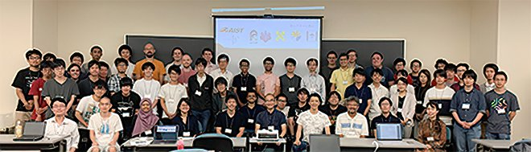

| 2023.12.19 | Okazaki Lab, Yokota Lab, and AIST have released a large language model “Swallow” with the highest Japanese capability among open models. Okazaki and Yokota labs at the Tokyo Institute of Technology, and the National Institute of Advanced Industrial Science and Technology has improved the Japanese language capabilities of Llama 2 7B, 13B, and 70B, achieving the highest performance in Japanese among the 13B and 70B open LLMs. https://www.titech.ac.jp/news/2023/068089 |
||||||||||||||
| 2023.08.11 | Prof. Yokota appeared in the TV series "Gaia no Yoake" Prof. Yokota introduced his recent efforts to develop foundational technology to train generative AI models on the supercomputer Fugaku in the TV series "Gaia no Yoake” https://www.tv-tokyo.co.jp/gaia/ |
||||||||||||||
| 2023.04.25 | We will be hosting a special seminar by members of Stability AI Japan - David Ha, Jerry Chi, and Kamil Rocki.
We plan to stream the talks on Zoom.
|
||||||||||||||
| 2023.03.04 | The work by Satoki Ishikawa (4th year Bachelor) won the Student Encouragement Award at the 85th National Convention of IPSJ The work by Satoki Ishikawa (4th year Bachelor) titled “Examination of Gradient Preconditioning in Deep Learning” was presented at the 85th National Convention of IPSJ and won the Student Encouragement Award. |
||||||||||||||
| 2023.03.02 | The work by Hiroyuki Ootomo (3nd year PhD) won the best paper award at HPC Asia 2023 The work by Hiroyuki Ootomo (3nd year PhD) “Reducing shared memory footprint to leverage high throughput on Tensor Cores and its flexible API extension library” won the best paper award at HPC Asia 2023. |
||||||||||||||
| 2023.02.28 | The work by Sora Takashima (2nd year Master) in collaboration with AIST was accepted to CVPR2023 The work by Sora Takashima (2nd year Master) in collaboration with AIST “Visual Atoms: Pre-training Vision Transformers with Sinusoidal Waves” has been accepted to IEEE/CVF Conference on Computer Vision and Pattern Recognition (CVPR2023) (acceptance rate 25.78%) |
||||||||||||||
| 2023.02.01 | Kazuki Osawa (graduated) has joined DeepMind Kazuki Osawa (graduated) has joined the Optimization and Bayesian Deep Learning Team at DeepMind. |
2022
| 2022.12.18 | The work by Aoyu Li (alumni) received the Best paper award at ACM Multimedia Asia 2022 |
| 2022.12.18 | The work by Aoyu Li (alumni) titled “Informative Sample-aware Proxy for Deep Metric Learning” received the Best paper award at ACM Multimedia Asia 2022Research Award |
| 2022.07.28 | The work by Hiroyuki Otomo (3nd year PhD) received the Yamashita Memorial Research Award The work by Hiroyuki Otomo (3nd year PhD) titled “Error Corrected Single Precision Matrix Multiplication on TensorCores” received the Yamashita Memorial Research Award https://www.ipsj.or.jp/award/yamashita2022.html |
| 2022.06.13 | The work by Qianxiang Ma (2nd year PhD) and Sameer Deshmukh (3rd year PhD) was accepted to SC22. The work by Qianxiang Ma (2nd year PhD) and Sameer Deshmukh (3rd year PhD) titled ”Scalable Linear Time Dense Direct Solver for 3-D Problems Without Trailing Sub-Matrix Dependencies” has been accepted to The International Conference for High Performance Computing, Networking, Storage, and Analysis (SC22) |
| 2022.05.29 | The work by Muhammad Ridwan Apriansyah (2nd year PhD) was accepted to ACM TOMS. The work by Muhammad Ridwan Apriansyah (2nd year PhD) titled ”Parallel QR Factorization of Block Low-Rank Matrices” has been accepted to ACM Transactions on Mathematical Software |
| 2022.03.04 | The work by Shukai Nakamura (4th year Bachelor) won the Student Encouragement Award at the 84th National Convention of IPSJ The work by Shukai Nakamura (4th year Bachelor) titled “The effect of batch size on the generalization of vision transformers” was presented at the 84th National Convention of IPSJ and won the Student Encouragement Award. |
| 2022.03.03 | The work by Edgar Martinez Noriega (Postdoc), Sora Takashima (1st year Master), Xinyu Zhang (1st year Master) in collaboration with AIST was accepted to CVPR2022. The work by Edgar Martinez Noriega (Postdoc), Sora Takashima (1st year Master), Xinyu Zhang (1st year Master) in collaboration with AIST titled ”Replacing Labeled Real-image Datasets with Auto-generated Contours” has been accepted to IEEE/CVF Conference on Computer Vision and Pattern Recognition (CVPR2022). (Acceptance rate 25.33%) |
| 2022.02.28 | The work by Hiroyuki Ootomo (2nd year PhD) was accepted to IJHPCA. The work by Hiroyuki Ootomo (2nd year PhD) titled ”Recovering Single Precision Accuracy from Tensor Cores While Surpassing the FP32 Theoretical Peak Performance” has been accepted to The International Journal of High Performance Computing Application |
| 2022.02.01 | The work by Hana Hoshino (2nd year Master) was accepted to ICRA2022. The work by Hana Hoshino (2nd year Master) titled ”OPIRL: Sample Efficient Off-Policy Inverse Reinforcement Learning via Distribution Matching” has been accepted to IEEE International Conference on Robotics and Automation (ICRA2022). (Acceptance rate 43%) |
2021
2020
| 2020.11.06 | A new post-doc Edgar Josafat Martinez Noriega has joined our group A new post-doc Edgar Josafat Martinez Noriega has joined our group as a Researcher for the NEDO project “Technology development business related to next-generation artificial intelligence that evolves with people”. |
| 2020.10.02 | The team “shallowverse” in which Yuichiro Ueno (M2) participates has passed the qualifying for the Web application acceleration contest “ISUCON10" in the second place overall and the first place for student teams. |
| 2020.09.25 | The work by Kazuki Osawa (3rd year PhD) was accepted to NeurIPS 2020 as an oral presentation The joint work of Kazuki Osawa (3rd year PhD) and Ryo Karakida at AIST titled "Understanding Approximate Fisher Information for Fast Convergence of Natural Gradient Descent in Wide Neural Networks"was accepted to the Thirty-forth Conference on Neural Information Processing Systems (NeurIPS 2020) as an oral presentation.（Acceptance rate 1.1%） |
| 2020.08.25 | The joint work by Yuichiro Ueno (2nd year Master) and Kazuki Osawa (3rd year PhD) was presented at KDD 2020 The joint work by Yuichiro Ueno (2nd year Master) and Kazuki Osawa (3rd year PhD) titled "Rich Information is Affordable: A Systematic Performance Analysis of Second-order Optimization Using K-FAC" was presented at KDD 2020. (Acceptance rate 16.9% 216/1279) |
| 2020.08.05 | Our HPCI project received the outstanding research award. Our HPCI project titled “Development of an Innovative Optimization Method for Massively Parallel Deep Learning” received the HPCI outstanding research award at the 7th results briefing. |
| 2020.07.03 | The joint work of Mikiya Shibuya (1st year Master) and Ken Sakurada at AIST was accepted to ECCV2020 The joint work of Mikiya Shibuya (1st year Master) and Ken Sakurada at AIST titled "Privacy Preserving Visual SLAM" was accepted to ECCV2020 (Acceptance rate 27%) |
| 2020.06.22 | Hiroyuki Otomo (1st year PhD) and Sameer Deshmukh (1st year PhD) presented their posters at ISC2020 |
| 2020.06.20 | The joint work by Kazuki Osawa (3rd year PhD) and Yuichiro Ueno (2nd year Master) was accepted to the IEEE Transactions on Pattern Analysis and Machine Intelligence (TPAMI). The joint work by Kazuki Osawa (3rd year PhD) and Yuichiro Ueno (2nd year Master) titled "Scalable and Practical Natural Gradient for Large-Scale Deep Learning" was accepted to one of the top journals in the AI/ML field -- the IEEE Transactions on Pattern Analysis and Machine Intelligence (TPAMI). |
| 2020.05.16 | The joint work by Yuichiro Ueno (2nd year Master) and Kazuki Osawa (3rd year PhD) was accepted to KDD 2020 The joint work by Yuichiro Ueno (2nd year Master) and Kazuki Osawa (3rd year PhD) titled "Rich Information is Affordable: A Systematic Performance Analysis of Second-order Optimization Using K-FAC" was accepted to the 26th ACM SIGKDD International Conference on Knowledge Discovery and Data Mining (KDD 2020, Virtual Event, USA) research track. (Acceptance rate 16.9% 216/1279) |
| 2020.04.23 | Hiroyuki Otomo (1st year PhD) and Sameer Deshmukh (1st year PhD) had their posters accepted to ISC2020 The work by Hiroyuki Otomo (1st year PhD) titled “Randomized SVD on TensorCores” and the work by Sameer Deshmukh (1st year PhD) titled “Distributed Memory Task-Based Block Low Rank Direct Solver” was accepted to ISC2020 as a research poster. |
| 2020.03.17 | Linsho Kaku (2nd year Master) won 1st place in Kaggle Linsho Kaku (2nd year Master) won 1st place in the Kaggle competition for “Bengali.AI Handwritten Grapheme Classification”. https://www.kaggle.com/c/bengaliai-cv19/leaderboard |
| 2020.01.22 | Hiroyuki Otomo (2nd year Master) won 2nd place in the HAKKO experiment contest The work by Hiroyuki Otomo (2nd year Master) for “An Experiment of Heat Released from Computer Parts” won 2nd place in the HAKKO experiment contest. |
| 2020.01.16 | Sameer Deshmukh (1st year PhD) and Muhammad Ridwan Apriansyah (2nd year Master) presented their posters at HPC Asia 2020 The work by Sameer Deshmukh (1st year PhD) titled “Distributed Memory Task-Based Block Low Rank Direct Solver” and the work by Muhammad Ridwan Apriansyah (2nd year Master) titled “QR Decomposition of Block Low-Rank Matrices” was presented at the Poster Session at HPC Asia 2020. http://sighpc.ipsj.or.jp/HPCAsia2020/index.html |
2019
| 2019.11.22 | The work of Hiroki Naganuma (1st year PhD) was presented as a poster at IBIS2019 http://ibisml.org/ibis2019/posters/ |
| 2019.11.20 | The work by Hiroyuki Otomo (2nd year Master) was selected as a best poster candidate at SC19 The work by Hiroyuki Otomo (2nd year Master) titled “TSQR on TensorCores” was selected as a best poster candidate at SC19. |
| 2019.11.19 | The posters by Hiroyuki Otomo (2nd year Master) and Qianxiang Ma (1st year Master) were presented at SC19 The posters by Hiroyuki Otomo (2nd year Master) titled “TSQR on TensorCores” and Qianxiang Ma (1st year Master) titled “Runtime System for GPU-based Hierarchical LU factorization” were presented at SC19. https://sc19.supercomputing.org/ |
| 2019.11.17 | The poster by Hiroki Naganuma (1st year PhD) was presented at ACML2019 The poster by Hiroki Naganuma (1st year PhD) titled “On Empirical Analysis of Layer-wised Learning Rate Schedule” was presented at ACML2019 Workshop on Statistics & Machine Learning Researchers. |
| 2019.11.16-18 | Linsho Kaku (1st year Master) participated in the ICPC 2019 Asia Yokohama Regional as “unlimited greedy” https://icpc.iisf.or.jp/2019-yokohama/regional-standings/ |
| 2019.09.07 | The work by Hiroyuki Otomo (2nd year Master) and Qianxiang Ma (1st year Master) were accepted as Research Posters to SC19 The posters by Hiroyuki Otomo (2nd year Master) titled “TSQR on TensorCores” and Qianxiang Ma (1st year Master) titled “Runtime System for GPU-based Hierarchical LU factorization” were accepted to SC19. https://sc19.supercomputing.org/ |
| 2019.09.03 | The work by Hiroyuki Otomo (2nd year Master) was presented at the JSIAM Annual Conference. The work by Hiroyuki Otomo (2nd year Master) titled “TSQR on TensorCores” was presented at the JSIAM Annual Conference. https://annual2019.jsiam.org/ |
| 2019.09.03 | The work by Kazuki Osawa (2nd year PhD) was accepted to NeurIPS 2019. The work by Kazuki Osawa (2nd year PhD) titled “Practical Deep Learning with Bayesian Principles” was accepted to a top conference in the field of machine learning -- the Thirty-third Conference on Neural Information Processing Systems (NeurIPS 2019, Vancouver, CANADA).（Acceptance rate 21.1% 1428/6743） https://neurips.cc/Conferences/2019/ |
| 2019.08.26-28 | The CREST Deep Joint Workshop was held at LecTore Hayama.  |
| 2019.07.29 | The work by Shun Iwase (2nd year Master) was presented at MIRU2019. http://cvim.ipsj.or.jp/MIRU2019/ |
| 2019.07.26 | The work by Hiroyuki Otomo (2nd year Master) and Peter Spalthoff (2nd year Master) was presented at the 170th HPC Seminar https://www.ipsj.or.jp/kenkyukai/event/hpc170.html |
| 2019.07.12 | The team of Linsho Kaku (1st year Master) “unlimited greedy” won the domestic qualifying round of ICPC2019 The team of Linsho Kaku (1st year Master) “unlimited greedy” won the domestic qualifying round of ICPC2019, allowing them to proceed to the Asian qualifying round in December. https://icpcsec.firebaseapp.com/standings/ |
| 2019.05.29 | The work by Hiroki Naganuma (1st year PhD) received the Outstanding Presentation Award at xSig2019. The work by Hiroki Naganuma (1st year PhD) received the Outstanding Presentation Award at xSig2019, held at Keio University. https://xsig.ipsj.or.jp/2019/awards/ |
| 2019.05.28 | The work by Hiroki Naganuma (1st year PhD) was presented at xSig2019. The work by Hiroki Naganuma (1st year PhD) titled “Effectiveness of Smoothing in Natural Gradient Learning Method for Large Batch Learning” was presented at xSig2019. https://xsig.ipsj.or.jp/2019/ |
| 2019.05.14 | The work by Hiroki Naganuma (1st year PhD) was presented at CCGrid2019 The work by Hiroki Naganuma (1st year PhD) titled “A Performance Improvement Approach for Second-Order Optimization in Large Mini-batch Training” was presented at the 2nd High Performance Machine Learning Workshop Held in conjunction with CCGrid2019. https://hpml2019.github.io/ |
| 2019.03.20 | The work by The work by Hiroki Naganuma (2nd year Master) won the Excellent Poster Award at the IEICE General Conference The work by The work by Hiroki Naganuma (2nd year Master) was presented at the IEICE General Conference and won the Excellent Poster Award https://www.ieice-taikai.jp/2019general/jpn/ |
| 2019.03.15 | The work by Hiroyuki Otomo (1st year Master) won the Student Encouragement Award at the 81st National Convention of IPSJ The work by Hiroyuki Otomo (1st year Master) was presented at the 81st National Convention of IPSJ and won the Student Encouragement Award. http://www.ipsj.or.jp/award/taikaigakusei.html |
| 2019.03.14 | Kazuki Osawa (1st year PhD), Hiroki Naganuma (2nd year Master), Hiroyuki Otomo (1st year Master), and Hikaru Nataka (4th year Bachelor) presented at the 81st National Convention of IPSJ. Kazuki Osawa (1st year PhD), Hiroki Naganuma (2nd year Master), Hiroyuki Otomo (1st year Master), and Hikaru Nataka (4th year Bachelor) presented at the 81st National Convention of IPSJ. https://www.ipsj.or.jp/event/taikai/81/ |
| 2019.03.02 | The joint work by Kazuki Osawa (1st year PhD) and Yuichiro Ueno (4th year Bachelor) was accepted to CVPR2019 The joint work by Kazuki Osawa (1st year PhD) and Yuichiro Ueno (4th year Bachelor) titled “Large-scale Distributed Second-order Optimization Using Kronecker-factored Approximate Curvature for Deep Convolutional Neural Networks” was accepted to the IEEE Conference on Computer Vision and Pattern Recognition (CVPR 2019, Long Beach, CA) (Acceptance rate 25.2% 1300/5160） |
| 2019.02.16 | The work by Yuichiro Ueno (4th year Bachelor) was accepted to CCGrid 2019. The work by Yuichiro Ueno (4th year Bachelor) titled “Exhaustive Study of Hierarchical AllReduce Patterns for Large Messages Between GPUs” was accepted to the IEEE/ACM International Symposium in Cluster, Cloud, and Grid Computing (CCGrid 2019)（Acceptance rate 22.7% 47/207） |
2018
| 2018.12.08 | The team of Peter Spalthoff (1st year Master) won 1st place at the Tokyo Tech division of the HULT PRIZE 2019 |
| 2018.12.07 | Hiroki Naganuma (2nd year Master) won the JAMES DYSON AWARD2018. Hiroki Naganuma (2nd year Master) won the JAMES DYSON AWARD2018 https://www.titech.ac.jp/english/news/2018/042324.html |
| 2018.09.19 | The work by Hiroki Naganuma (2nd year Master) was presented at the 17th Forum on Information Technology The work by Hiroki Naganuma (2nd year Master) titled “Hyperparameter Optimization in Massively Parallel Deep Learning Using Natural Gradient Approximation” was presented at the 17th Forum on Information Technology. https://www.ipsj.or.jp/event/fit/fit2018/ |
| 2018.08.20 | Hiroyuki Otomo (1st year Master) participated in the 24th Supercomputing Contest as a tutor Hiroyuki Otomo (1st year Master) participated as a tutor in the 24th Supercomputing Contest, which was jointly held by the Global Scientific Information and Computing Center at the Tokyo Institute of Technology and the Cybermedia Center at Osaka University. http://www.gsic.titech.ac.jp/supercon/main/attwiki/index.php?SupercomputingContest2018 |
| 2018.03.14 | Hiroki Naganuma (1st year Master) participated in the KOBE HPC Spring School 2018 http://www.eccse.kobe-u.ac.jp/simulation_school/kobe-hpc-spring-school-2018/ |
| 2018.03.13 | The work by Hiroyuki Otomo (4th year Bachelor) and Yuji Kuwamura (4th year Bachelor) was presented at the 80th National Convention of IPSJ The work by Hiroyuki Otomo (4th year Bachelor) and Yuji Kuwamura (4th year Bachelor) was presented at the 80th National Convention of IPSJ. https://www.ipsj.or.jp/event/taikai/80/ |
| 2018.03.01 | The work by Hiroyuki Otomo (4th year Bachelor) was presented at the 163rd HPC Seminar The work by Hiroyuki Otomo (4th year Bachelor) titled “Distributed Learning of Deep Neural Networks Using Kronecker Factorization of Fisher Information Matrix” was presented at the 163rd HPC Seminar. https://www.ipsj.or.jp/kenkyukai/event/hpc163.html |
| 2018.01.29 | The work by Hiroki Naganuma (1st year Master) was presented at HPC Asia 2018. The work by Hiroki Naganuma (1st year Master) titled “Accelerating Convolutional Neural Networks Using Low Precision Arithmetic” was presented at HPC Asia 2018. http://sighpc.ipsj.or.jp/HPCAsia2018/ |
2017
| 2017.12.12 | The work by Hiroki Naganuma (1st year Master) was present at GTC Japan 2018 |
| 2017.11.23 | Hiroki Naganuma (1st year Master) won the Digital Creative Department Grand Prize at the 2025 Japan World Expo Committee Creative Competition. Hiroki Naganuma (1st year Master) won the Digital Creative Department Grand Prize at the 2025 Japan World Expo Committee Creative Competition. https://pulse-beat.com/articles/a7vAC |
| 2017.11.12 | Kazuki Osawa (2nd year Master) was selected as a student volunteer for SC17 http://sc17.supercomputing.org/studentssc/student-volunteers/ |
| 2017.10.21 | Hiroki Naganuma (1st year Master) won 3rd place in the Stanford's Health Hackathon Health++ 2017 Hiroki Naganuma (1st year Master) participated in the Stanford's Health Hackathon Health++ 2017 and won 3rd place and received the Persistent-Neodesign award. https://www.titech.ac.jp/news/2017/039929.html |
| 2017.10.12 | Kazuki Osawa (2nd year Master) and Hiroki Naganuma (1st year Master) presented their work at PRMU 2017 http://www.ieice.org/iss/prmu/jpn/index.html |
| 2017.09.13 | The work by Kazuki Osawa (2nd year Master) was presented at ICANN 2017 The work by Kazuki Osawa (2nd year Master) titled “Evaluating the Compression Efficiency of the Filters in Convolutional Neural Networks” was presented at the 26th International Conference on Artificial Neural Networks. http://www.icann2017.org/ |
| 2017.09.06 | The work by Hiroki Naganuma (1st year Master) was presented at the JSIAM Annual Conference The work by Hiroki Naganuma (1st year Master) titled “Speeding Up Compressed Models Using Half-Precision Operations in Deep Learning” was presented at the JSIAM Annual Conference. http://annual2017.jsiam.org/ |
| 2017.09.04 | Hiroyuki Otomo (4th year Bachelor) participated in the KOBE HPC Summer School 2017 Hiroyuki Otomo (4th year Bachelor) participated in the KOBE HPC Summer School 2017. http://www.eccse.kobe-u.ac.jp/simulation_school/kobe-hpc-summer-school-2017/ |
| 2017.08.25 | Hiroyuki Otomo (4th year Bachelor) participated in the 23rd Supercomputing Contest as a tutor Hiroyuki Otomo (4th year Bachelor) participated in the 23rd Supercomputing Contest, which was jointly held by the Global Scientific Information and Computing Center at the Tokyo Institute of Technology and the Cybermedia Center at Osaka University. http://www.gsic.titech.ac.jp/supercon/main/attwiki/index.php?SupercomputingContest2017 |
| 2017.07.26 | Naganuma Hiroki (1st year Master) received the Son Masayoshi Foundation Scholarship Naganuma Hiroki (1st year Master) received the Son Masayoshi Foundation Scholarship, selected as one of the most talented 96 young scholars under 25 years old among the more than 1,100 applicants. http://masason-foundation.org/ |
| 2017.07.17 | The work by Kazuki Osawa (2nd year Master) was presented at HPCS2017. The work by Kazuki Osawa (2nd year Master) titled “Accelerating Matrix Multiplication in Deep Learning by Using Low-Rank Approximation” was presented at the 2017 International Conference on High Performance Computing & Simulation. http://hpcs2017.cisedu.info/ |
| 2017.06.01 | The work by Kazuki Osawa (2nd year Master) was presented at the 22nd JSCES Conference. The work by Kazuki Osawa (2nd year Master) titled “Accelerating Convolutional Neural Networks Using Low-Rank Approximation” was presented at the 22nd JSCES Conference. http://www.jsces.org/koenkai/22/ |
| 2017.03.27 | The team of Hiroki Naganuma (4th year Bachelor) won 1st Prize at the Imagine Cup 2017 Japan qualifiers The team of Hiroki Naganuma (4th year Bachelor) won 1st Prize at the Imagine Cup 2017 Japan qualifiers. They also received the Dean's Award, School of Computing at Tokyo Institute of Technology for this achievement. https://www.microsoft.com/ja-jp/education/imagine-cup.aspx |
| 2017.03.08 | The work by Akira Sekiya (1st year Master) was presented at the 158th HPC Seminar The work by Akira Sekiya (1st year Master) titled “Accelerating Matrix Products in Deep Learning Using Low-Rank Approximation” was presented at the 158th HPC Seminar. http://www.ipsj.or.jp/kenkyukai/event/hpc158.html |
| 2017.02.21 | The Tokyo Tech. – AIST Real World Big Data Computation Open Innovation Laboratory (RWBC-OIL) was founded The Tokyo Tech. – AIST Real World Big Data Computation Open Innovation Laboratory (RWBC-OIL) was founded. Our lab is involved in the Real World HPC Systems for Big Data/AI Research Team. http://www.titech.ac.jp/news/2017/037519.html http://www.aist.go.jp/aist_j/news/announce/pr20170220.html |
2016
| 2016.12.19 | Hiroki Naganuma (4th year Bachelor) won the JPHacks Best Idea Award, Mashup Award, and best student award |
| 2016.11.23 | Dr. Miquel Pericas visited our group. Dr. Miquel Pericas from Chalmers University of Technology visited our group for collaboration on Task Assembly Objects (TAO) for Fast Multipole Methods (FMM). |
| 2016.11.13 | Hiroki Naganuma (4th year Bachelor) was selected for the SC16 HPC for Undergraduates Program Hiroki Naganuma (4th year Bachelor) was the first Japanese student to be selected for the HPC for Undergraduates Program at SC. http://sc16.supercomputing.org/ |
| 2016.08.28 | Kazuki Osawa (1st year Master) participated in the Silicon Valley Workshop 2016 Summer Kazuki Osawa (1st year Master) participated in the Silicon Valley Workshop 2016 Summer organized by Recruit Holdings’ TECH LAB PAAK, where he spent 10 days touring the IT companies in Silicon Valley. Places he visited are Stanford University, UC Berkeley, NVIDIA, Google, Twitter, Facebook, Recruit Institute of Technology, Stripe, Niantic, Torre, Oracle. http://techlabpaak.com/blog/1548 |
| 2016.08.22 | Kazuki Osawa (1st year Master) and Hiroki Naganuma (4th year Bachelor) participated in the 22nd Supercomputing Contest as tutors Kazuki Osawa (1st year Master) and Hiroki Naganuma (4th year Bachelor) participated as tutors in the 22nd Supercomputing Contest, which was jointly held by the Global Scientific Information and Computing Center at the Tokyo Institute of Technology and the Cybermedia Center at Osaka University. http://www.gsic.titech.ac.jp/supercon/main/attwiki/index.php?SupercomputingContest2016 |
| 2016.07.02 | Dr. Miquel Pericas visited our group. Dr. Miquel Pericas from Chalmers University of Technology visited our group for collaboration on Task Assembly Objects (TAO) for Fast Multipole Methods (FMM). |